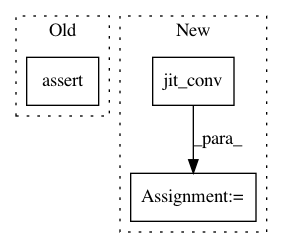

93fab2e53dbd812c8cb08fc7a789ec0ace9e8768,test/nn/conv/test_gcn_conv.py,,test_gcn_conv,#,5
Before Change
jittedconv.eval()
assert (torch.abs(conv(x, edge_index) -
jitconv(x, edge_index)) < 1e-6).all().item()
assert (torch.abs(conv(x, edge_index) -
jittedconv(x, edge_index)) < 1e-6).all().item()
conv = GCNConv(in_channels, out_channels, cached=True)
conv(x, edge_index).size() == (num_nodes, out_channels)
conv(x, edge_index).size() == (num_nodes, out_channels)
After Change
jit_conv = conv.jittable(x=x, edge_index=edge_index)
jit_conv = torch.jit.script(jit_conv)
jit_out = jit_conv(x, edge_index)
assert jit_out.tolist() == out.tolist()
conv = GCNConv(in_channels, out_channels, cached=True)
out = conv(x, edge_index)
In pattern: SUPERPATTERN
Frequency: 3
Non-data size: 3
Instances
Project Name: rusty1s/pytorch_geometric
Commit Name: 93fab2e53dbd812c8cb08fc7a789ec0ace9e8768
Time: 2020-06-08
Author: matthias.fey@tu-dortmund.de
File Name: test/nn/conv/test_gcn_conv.py
Class Name:
Method Name: test_gcn_conv
Project Name: rusty1s/pytorch_geometric
Commit Name: 93fab2e53dbd812c8cb08fc7a789ec0ace9e8768
Time: 2020-06-08
Author: matthias.fey@tu-dortmund.de
File Name: test/nn/conv/test_gcn_conv.py
Class Name:
Method Name: test_static_gcn_conv
Project Name: rusty1s/pytorch_geometric
Commit Name: 5762f2b30f58c1623efd6841d1273d8ab67541ea
Time: 2020-06-08
Author: matthias.fey@tu-dortmund.de
File Name: test/nn/conv/test_gin_conv.py
Class Name:
Method Name: test_gin_conv